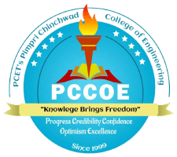

| Name | Roll No |
|---|---|
| Lokesh Ajmera | 124B1C004 |
| Isha Thakur | 124B1C006 |
| Pratham Bokefode | 124B1C016 |
| Shamal Dighole | 124B1C020 |
| Sr. No. | Topics |
|---|---|
| 1 | Abstract |
| 2 | Introduction 2.1 Problem Statement 2.2 Project Objective |
| 3 | Planning Phase 3.1 Statement of Work (SOW) 3.2 Resource Plan |
| 4 | Requirements Analysis 4.1 Functional Requirements 4.2 Non-Functional Requirements |
| 5 | Design & System Architecture 5.1 Architectural Plan 5.2 ER Model 5.3 UI/UX Design Consideration |
| 6 | Implementation (Coding) 6.1 Modular Development Approach 6.2 AI Tools Integration 6.3 Integration with Frontend 6.4 State Management 6.5 API Design |
| 7 | Database Implementation (DDL & DML) 7.1 Data Definition Language (DDL) Equivalents 7.2 Data Manipulation Language (DML) Equivalents |
| 8 | Testing & Quality Assurance 8.1 Testing Strategy 8.2 Test Cases 8.3 Scalability and Maintainability |
| 9 | Advantages of the Proposed Design |
| 10 | Conclusion |
| 11 | Future Scope |
The transition towards digital platforms in academic institutions is essential for real-time information dissemination and efficient resource allocation. The "PCCOE AI & ML Department Website" project is a full-stack web application designed specifically for the AI & ML department of PCCOE. It provides a centralized ecosystem for students to view academic syllabi, study resources, college notices, and student achievements.
Built using React (Vite), Node.js, Express, and MongoDB, the system utilizes a modern three-tier architecture. It incorporates advanced AI features via the Groq API (LLaMA 3) and Gemini API, enabling automated PDF lecture summarization and a built-in AI Tutor for students. The platform replaces fragmented data sharing with a structured dashboard for teachers to manage notices, faculty details, and department queries efficiently.
Academic departments generate and distribute a vast amount of data—ranging from official notices and faculty details to lecture notes and study guides. Traditionally, this information is communicated via scattered emails, physical notice boards, or generic messaging applications, which makes tracking updates difficult and inefficient for both students and faculty.
To resolve this, the PCCOE AI & ML Department Website provides an integrated full-stack portal. Students can browse dedicated pages for AiMSA, AAAI, IEEE-CS, view academic achievements, and upload lecture PDFs directly into the platform to generate intelligent summaries using AI.
Administratively, the project features a Teacher Dashboard secured by JSON Web Tokens (JWT). This backend allows faculty to actively perform CRUD operations on the department's database—updating notices, managing faculty profiles, and viewing student queries. By using MongoDB as the backend database, data scaling and document structure flexibility are achieved natively.
Currently, departmental information, administrative notices, and faculty data are managed through decentralized channels, making it difficult for students to locate critical academic resources promptly. Furthermore, there is a lack of accessible, department-specific AI study tools to assist students with long lecture notes or complex AI/ML concepts. Administrators and teaching staff also lack a unified, easily accessible digital dashboard to update website data without requiring code deployment.
The primary purpose of this web application is to digitize and centralize the PCCOE AI & ML department’s operations. Key objectives include:
| Project Title | PCCOE AI & ML Website - Full Stack Application |
| Objective | Develop a unified institutional platform providing department insights and AI study tools. |
| Scope | Frontend UI, Teacher Admin Panel, AI Summarization module, Database persistence. |
| Deliverables | Fully functional website + RESTful Node API + MongoDB Database. |
| Timeline | Iterative development (UI Design → Backend Logic & DB → Testing → Deployment). |
| Resource Type | Component | Details |
|---|---|---|
| Human | Development Team | Full-Stack Developers, Database Designers |
| Technical | Backend | Node.js, Express.js, JWT, Multer (File Uploads) |
| Frontend | React.js (Vite), TailwindCSS, Framer Motion | |
| Database | MongoDB Atlas Cloud | |
| Tools | Software | VS Code, Postman, MongoDB Compass |
Three-Tier Application Architecture:
The web platform is designed fundamentally as a 3-tier MERN stack application. The React client dynamically renders the views and manages states. The Express.js server facilitates API endpoints and proxies external AI processing requests. MongoDB serves as the persistence layer storing the state of Faculty, Notices, and Students.
Data Flow Explanation:
The ER model for the PCCOE AI & ML website manages essential administrative entities: Faculty, Notice, Contact, and Student. Given MongoDB's schema-less nature, collections are flexible but are structured via Mongoose Schemas to enforce data rules.
This design effectively supports the Teacher Dashboard capabilities, allowing administrative segregation. Operations like posting new departmental notices require updating the Notification data without affecting the user authentication collections.
/pages, /components, and /context ensuring clean architectural boundaries./api/faculty, /api/notices, /api/ai.
The unique selling point of this deployment is its native AI integration. Endpoints within /api/ai/summarize receive multipart form-data (PDFs), which are memory-buffered utilizing Multer. pdf-parse extracts the text, which is chunked and piped into the Groq API (LLaMA 3.3-70B model) to generate highly structured JSON study materials.
The client employs React Hooks (useState, useEffect) to query the Express backend. State managers populate dynamic lists (like the Faculty grid or Notice accordion). Cross-Origin Resource Sharing (CORS) is enabled to allow smooth communication between ports 5173 (Vite) and 5000 (Node).
| Method | Endpoint | Description |
|---|---|---|
| GET | /api/notices | Fetch all departmental notices |
| POST | /api/contact | Persist new visitor query into DB |
| POST | /api/ai/summarize | Upload PDF and receive generated AI JSON |
| POST | /api/faculty | (Admin) Create a new Faculty record |
The PCCOE website operates using Supabase (PostgreSQL) as its primary persistent database. Traditional SQL terminology (DDL/DML) applies directly here, utilizing advanced PostgreSQL features like Row-Level Security (RLS) to restrict teacher/student data access effectively.
DDL queries are executed to construct the Relational Schemas, setup triggers, and enforce foreign key constraints linking to Supabase's native auth users table.
DML is used for inserting storage buckets, whilst Supabase Policies define exactly matching access rights for specific CRUD actions depending on the session's authentication state.
| Test Case | Input | Expected Output | Actual Result |
|---|---|---|---|
| Teacher Authentication | Valid Admin Credentials | Returns JWT Token & Route Unlocks | Passed |
| Submit General Query | Filled Contact Form | 201 Inserted to Contact DB | Passed |
| Unauthenticated Delete | DELETE Request to Notice | 401 Unauthorized Error | Handled correctly |
| Generate Summary PDF | PDF Data File | 7-Section Exam JSON array | Passed |
| Render 48 Page Routes | Direct URL Navs | Components Render without Crash | Passed |
The decision to leverage a component-based frontend framework (React) layered atop a document-based NoSQL database affords highly flexible maintenance operations. Mongoose schema expansion accepts new database columns dynamically. Utilizing asyncHandler middleware ensures robust server persistence against generic code failures.
The newly established PCCOE web infrastructure heavily mitigates information silos. By integrating API routes specific to retrieving distinct JSON arrays, frontend UI rendering time is deeply optimized against traditional SSR webservers. Incorporating LLM intelligence completely replaces manual note simplification, granting competitive advantages to enrolled AI & ML students.
The PCCOE AI & ML Website efficiently addresses the gap between departmental administration and digital student access. The integration of the Node.js API with MongoDB constructs a reliable pipeline capable of administrating thousands of records effortlessly. Incorporating modern layout principles alongside state-of-the-art NLP AI implementations solidifies the portal as an advanced, educational SaaS standard. The modular structure confirms that the platform can indefinitely evolve alongside the department itself.